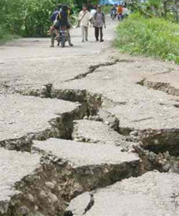

Emergency Agencies & Planning
|  |
|---|
| Street damage in Peru , August 2007 |
Arizona Division of Emergency Management is the broad office that includes the Arizona Earthquake Preparedness Planning. This site provides information on all emergency management in Arizona with links to supporting agencies.
Are you prepared for an earthquake? The American Red Cross provides tips for preparing your home, preventing hazards around your home, preparing a disaster kit, what to before and after the earthquake, and educational material for children and adults. This site also includes contact information for your local Red Cross chapter.
Federal Emergency Management Agency (FEMA), through FEMA Region IX, provides assistance to victims of disaster relief in Arizona. These sites give information about disaster history, region IX news, environmental information, and suggestions to prepare for a disaster. The FEMA site also provides information on how to protect oneself in the case of an earthquake. FEMA aslo sponsors the National Earthquake Hazards Reduction Program.